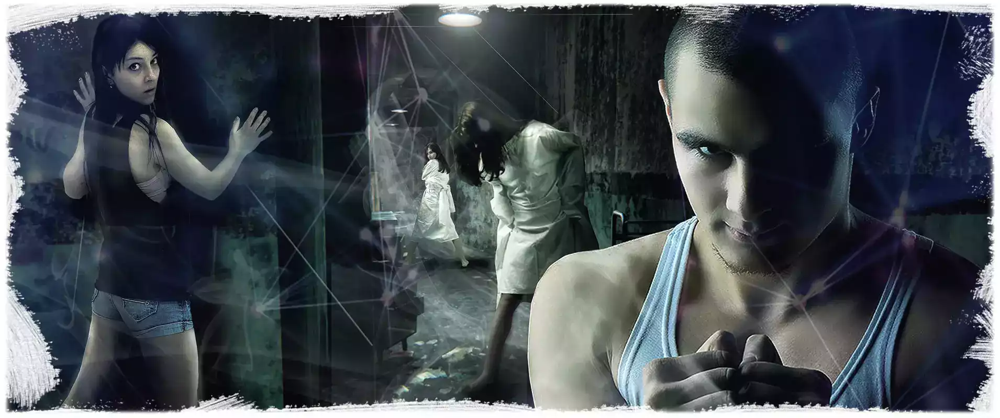
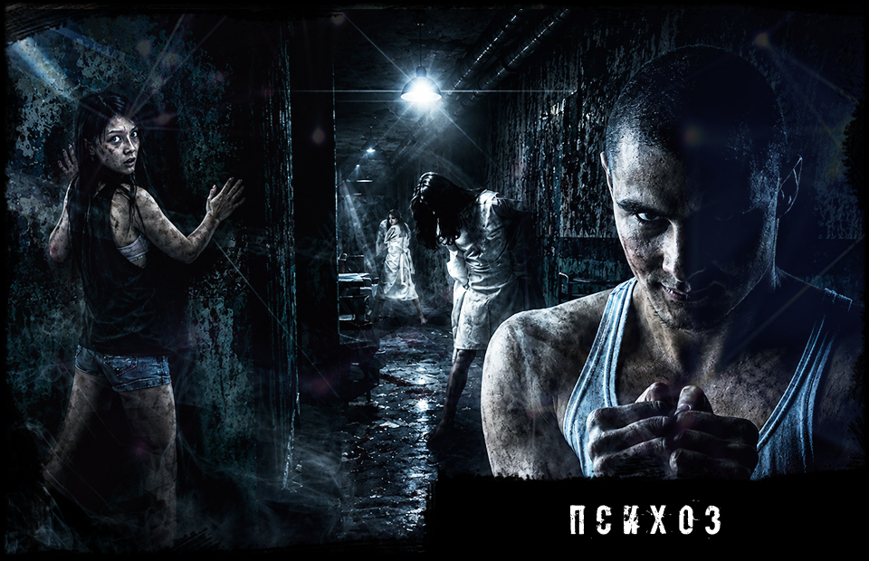
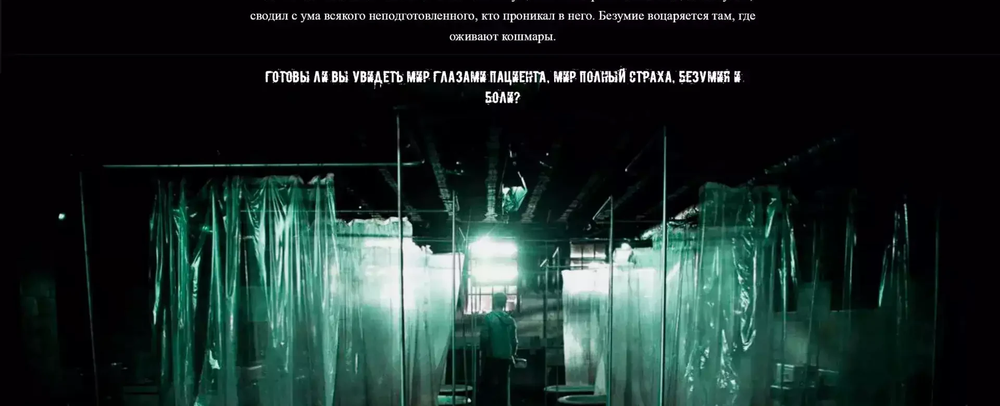
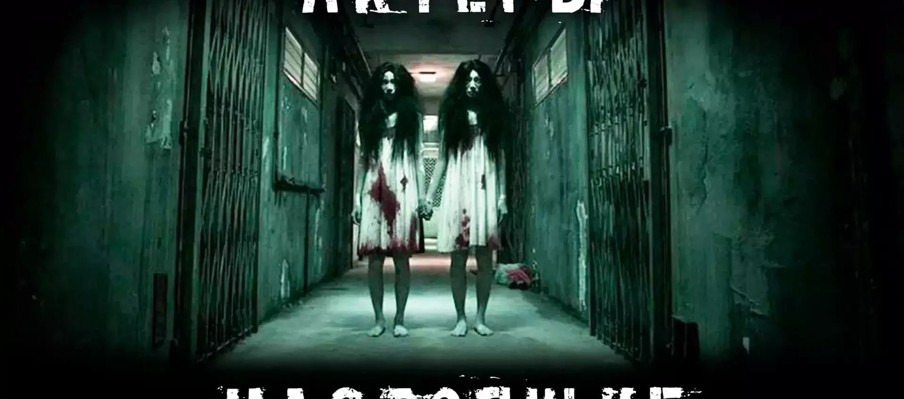
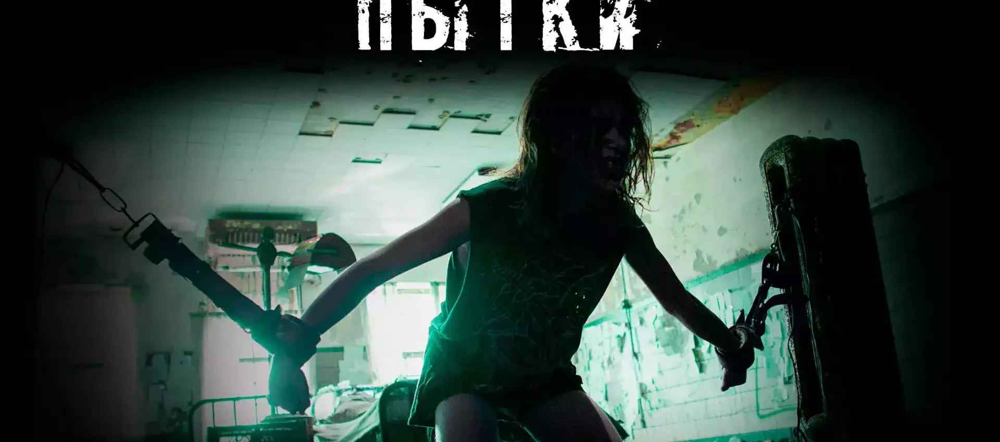
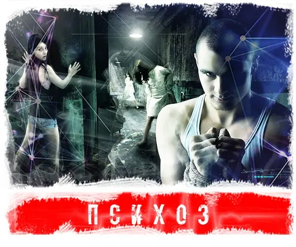

От 1500 руб./чел. Итог зависит от даты, состава команды и дополнительных услуг.

Атмосферный хоррор-квест с актерами
Психбольница
Темные палаты, тревожная лечебница, актерские появления и задания для команды. Сценарий подойдет тем, кто хочет хоррор в Ангарске с понятными условиями, адресом и регулируемым уровнем страха.
12+
4-20 игроков
1 час
с актерами
от 1500 руб./чел.
Что происходит в квесте
Психбольница - хоррор-сценарий в атмосфере закрытой лечебницы. Игроки попадают в место, где каждая палата, коридор и звук заставляют сомневаться, что команда здесь одна.
Нужно искать подсказки, выполнять задания, держаться вместе и не терять спокойствие, когда в игру подключаются актеры и внезапные сцены.
Уровень страха можно заранее обсудить: для новичков сценарий делают мягче, а для опытной команды можно добавить больше напряжения и контактности.
Главные особенности
- атмосфера психиатрической лечебницы;
- актерские элементы и внезапные появления;
- задания для команды и темные коридоры;
- формат для подростков, взрослых и компании друзей;
- можно добавить чайную зону после игры.
Запишись на игру
Выберите дату и свободное время. При бронировании укажите количество игроков и желаемый уровень страха.
Цены и условия
Коротко о том, что обычно спрашивают перед бронированием: цена, возраст, игроки, длительность, адрес, чайная зона, актеры и уровень страха.
Рекомендуемый возраст - 12+. Для подростков можно настроить мягкий уровень страха.
Обычно 4-20 человек. Для большой компании лучше уточнить формат заранее.
Игра длится около 1 часа. После прохождения можно добавить чайную зону.
Ангарск: ул. Восточная, 10А. Сценарий проходит на ангарской площадке IQuest.
Подходит для дня рождения, встречи друзей или продолжения праздника после игры.
Сценарий может проходить с актерскими элементами, внезапными появлениями и контактностью.
Интенсивность, контактность, громкость и свет можно согласовать до старта.
Кому подойдет Психбольница
Хороший выбор, если вы хотите
- атмосферный страшный квест в Ангарске;
- сценарий про лечебницу, палаты и напряженные коридоры;
- хоррор для компании друзей или дня рождения;
- возможность заранее настроить уровень страха.
Психбольницу удобно выбирать для команды, которая хочет хоррор без сложного выбора города: площадка находится в Ангарске по ул. Восточная, 10А.
Для дня рождения сценарий можно совместить с чайной зоной. Команда проходит квест, обсуждает самые напряженные моменты и продолжает праздник после игры.
Атмосфера квеста
Пока используем текущие изображения хоррор-направления. После подготовки новых карточек заменим их на финальные кадры Психбольницы.





Схема проезда
Психбольница проходит в Ангарске по адресу ул. Восточная, 10А.
Ангарск
ул. Восточная, 10А
Ангарская площадка для страшных квестов: удобно для компании друзей, подростков и дня рождения.
Открыть в Яндекс КартахВидео с игры
Короткие ролики без спойлеров и ключевых моментов: атмосфера, реакции команды и ощущение страшного квеста.
Психбольница в Ангарске на ул. Восточная, 10А
В Ангарске Психбольница проходит на площадке IQuest по адресу ул. Восточная, 10А. Это удобно для компаний, которые хотят страшный квест, актеров, адрес и чайную зону в одном месте.
Сценарий подойдет для подростков, взрослых, дня рождения и вечерней встречи друзей. Перед игрой администратор уточняет возраст, опыт команды и комфортный уровень страха.
Локальные запросы, которые закрывает страница
- Психбольница квест Ангарск;
- страшный квест Ангарск цена;
- квест с актерами Ангарск;
- хоррор-квест Ангарск Восточная 10А;
- квесты Ангарск 12+.
Психбольница или другой хоррор-квест
Сравните сценарии по настроению, актерам и ситуации, для которой подходит квест.
| Квест | Город | Актеры | Страх | Подходит для |
|---|---|---|---|---|
| Психбольница | Ангарск | по сценарию | атмосферный хоррор | подростки, взрослые, компания друзей |
| Оно | Иркутск и Ангарск | да | популярный хоррор | первый страшный квест, день рождения |
| Психоз | Ангарск | да | настраиваемый хоррор | большое погружение и опытные игроки |
| Экзорцизм | Иркутск и Ангарск | по сценарию | мистический | любители темных историй |
Кому Психбольница может не подойти
Лучше предупредить заранее
- если игроку нельзя сильный стресс, темноту или громкие звуки;
- если в команде есть дети младше рекомендованного возраста;
- если нужен полностью спокойный формат без актерских сцен;
- если есть медицинские ограничения, беременность или выраженная тревожность.
Психбольница - хоррор-квест, поэтому важно заранее обозначить ограничения команды. Если игроки впервые идут на страшный сценарий, можно выбрать мягкий режим.
Если нужен праздник без сильного напряжения, лучше рассмотреть детские и семейные форматы, лазертаг, NERF или приключенческие квесты без хоррора.
Что обычно отмечают игроки
Игроки запоминают ощущение закрытого пространства, темных коридоров и тревожных комнат.
Актерские элементы помогают держать напряжение и быстро погружают команду в сценарий.
Для дня рождения или компании можно добавить чайную зону и продолжить встречу после прохождения.
Частые вопросы
С какого возраста можно на Психбольницу?
Рекомендуемый возраст - 12+. Для подростков можно заранее обсудить мягкий уровень страха.
Где проходит квест?
Площадка находится в Ангарске по адресу ул. Восточная, 10А.
Сколько длится игра?
Основная игра длится около 1 часа. После прохождения можно добавить чайную зону.
Можно ли пройти на день рождения?
Да. Психбольница подходит для дня рождения, компании друзей и подростковой команды.
Выбрать время для Психбольницы
Позвоните или оставьте бронь на сайте: администратор подскажет свободное время, адрес и подходящий уровень страха для вашей команды.
Позвонить 8 (901) 666-888-1